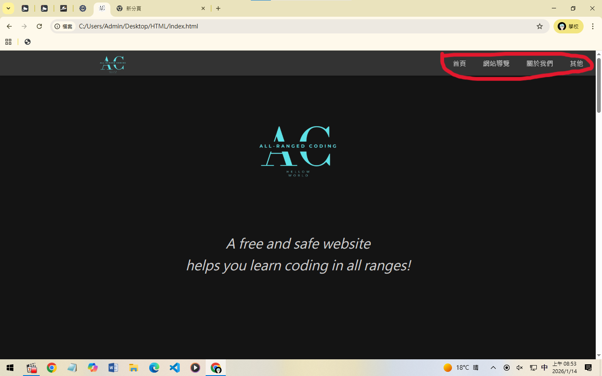
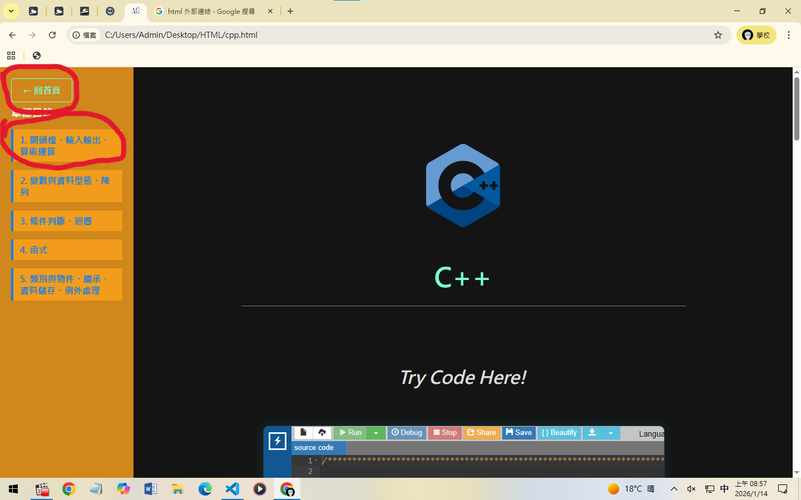
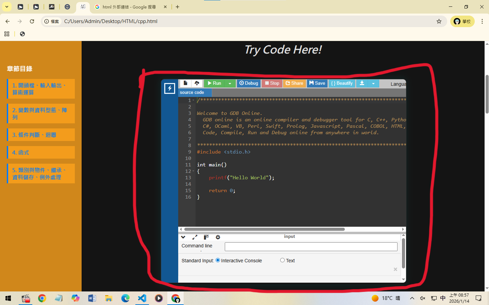
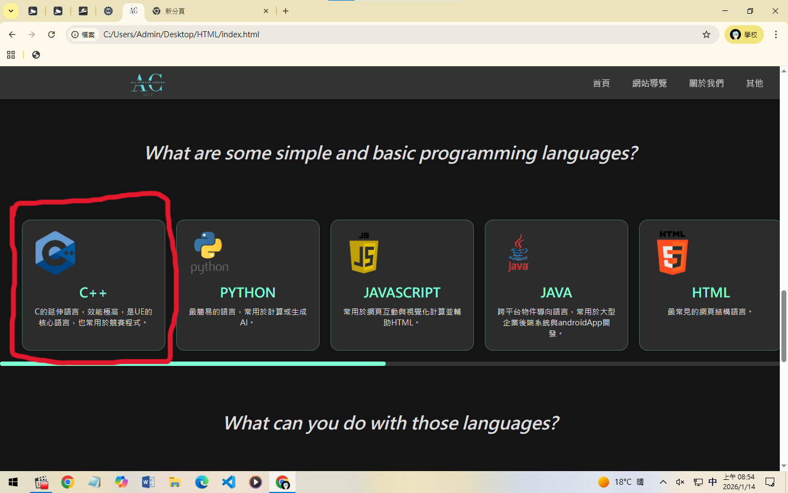
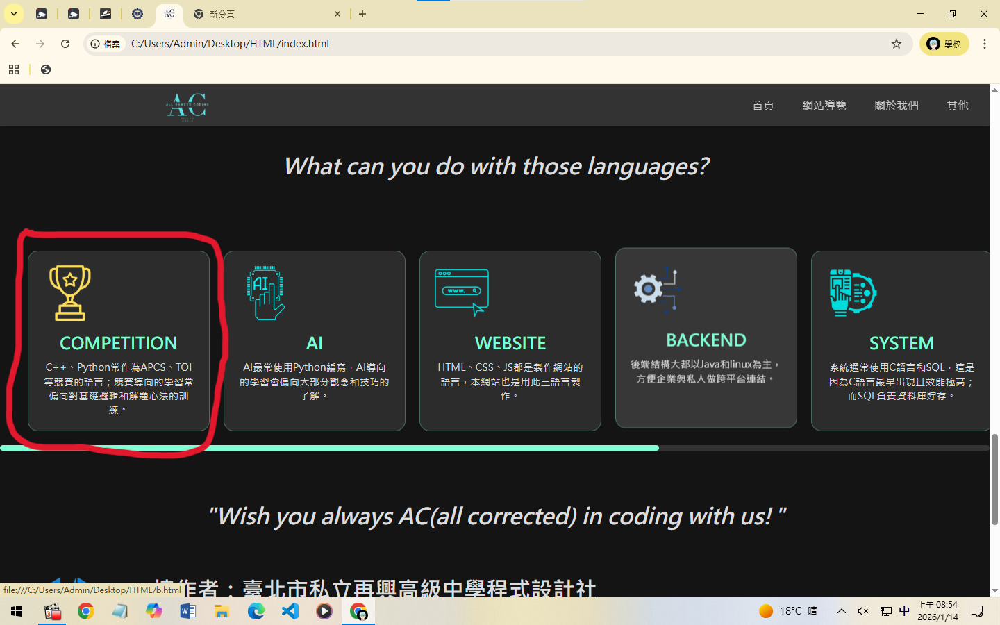
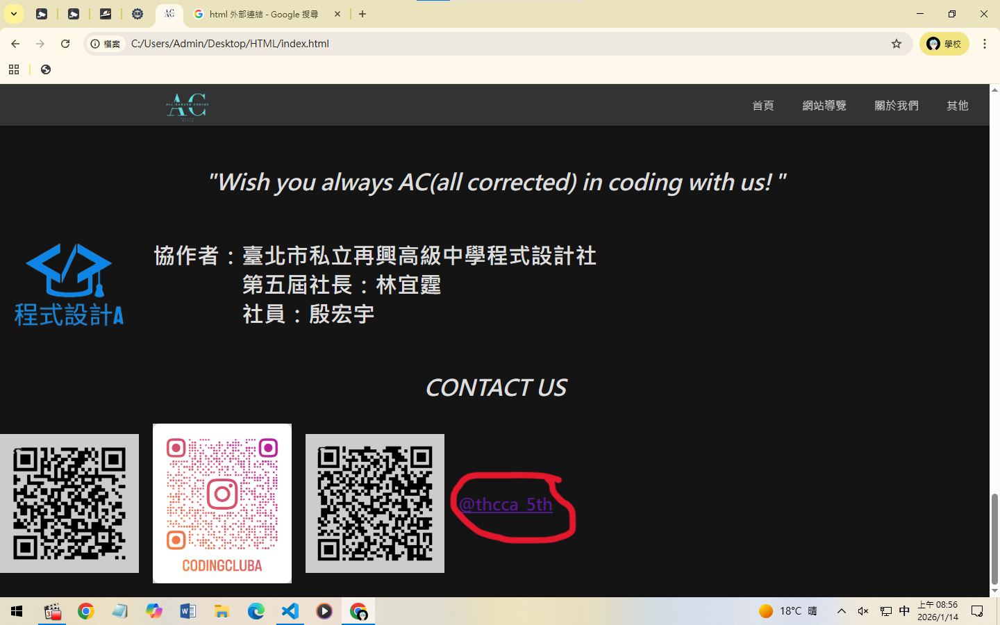

網站導覽
1. 架構簡介

在首頁、網站導覽、關於我們、其他可以在上方切換頁面。

側邊目錄記錄所有小章節，可以點擊以移動到該章節。

有些頁面有內嵌 GDB，學完一個段落後可以馬上實作練習！
2. 語言學習

首頁往下滑可選擇要學的程式語言，每個語言都有一小段簡介。
3. 實戰應用

語言學習往下滑可選擇要學的實戰應用，每個方向都有一小段簡介。
4. 聯絡我們

首頁最底有 QR code 和連結，若有任何問題歡迎私訊。